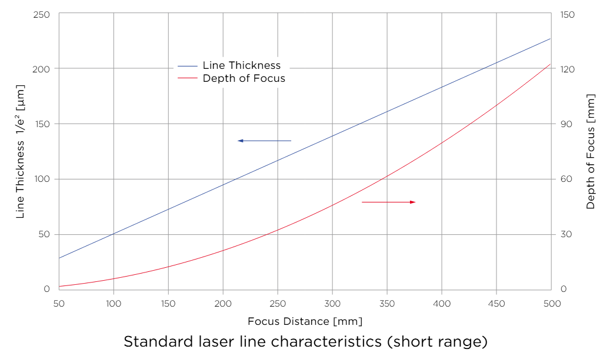
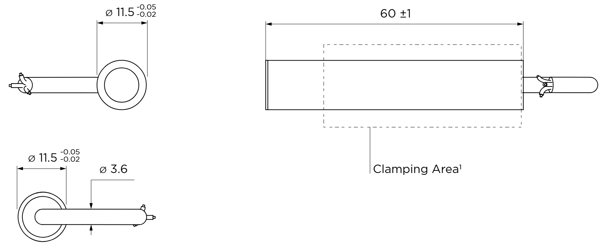

KOMPAKTES UND FLEXIBLES LASERMODUL – ALS STAND-ALONE-LÖSUNG ODER ZUR INTEGRATION
MVnano-Linienlaser haben einen Durchmesser von 11,5 mm und eine Länge von 54 mm. Damit eignen sie sich als Stand-alone-Lösung in Kombination mit einer Kamera für die 3D-Triangulation oder zur Integration in intelligente 3D-Vision-Sensoren. Sie bieten große Flexibilität durch verschiedene Wellenlängen (405 – 850 nm), Ausgangsleistungen bis 100 mW, fixen sowie einstellbaren Fokus und verschiedene Modulationsvarianten, z. B. 24 V.
Der MVnano mit neuer Fokusmechanik (Edition 2025) bietet eine verbesserte Staub- und Feuchtigkeitsdichtheit, eine noch kürzere Bauform und ein verbessertes Strahldriftverhalten beim Fokussieren des Lasers. Die bewährte, einfache Fokussiermethode bleibt unverändert.
Eine Vielzahl an Optikoptionen ermöglicht die passende Kombination aus Liniendicke und Tiefenschärfe für unterschiedlichste Anwendungen. Verschiedene Gehäusevarianten sind erhältlich, z. B. 2H (separate Gehäuse für Optik und Elektronik).
MERKMALE
Hervorragende Linienqualität für eine Vielzahl von Wellenlängen
Fixer und einstellbarer Fokus erhältlich
Verbesserte Fokusmechanik für den einstellbaren Fokus
Viele Optikoptionen für die passende Kombination aus Liniendicke und Tiefenschärfe
Der MVnano im kompakten 11,5 × 54 mm Gehäuse kann eigenständig eingesetzt oder als kostenoptimiertes Lasermodul in verschiedenste Anwendungen integriert werden.
FLEXPOINT® MVnano Linienlaser
Der FLEXPOINT® MVnano-Linienlaser ist der Standardlaser für die industrielle Bildverarbeitung. Mit einer Länge von 54 mm und einem Durchmesser von 11,5 mm eignet er sich ideal als Stand-Alone-Produkt oder für die platzsparende Integration in Sensoren oder 3D-Scanner.
Bei der Edition 2025 wurde die Fokussiermechanik grundlegend überarbeitet. Dadurch sind die Module zuverlässig gegen Staub, Spritzwasser und das Eindringen von Feuchtigkeit geschützt. Gleichzeitig wurde die Strahlabweichung bei der Fokussierung auf ein Minimum reduziert.
Homogene Leistungsverteilung und perfekte Linienqualität
Die Linienlaser der FLEXPOINT® MVnano-Serie bieten dank der hochpräzisen Powell-Linse aus eigener Produktion eine hervorragende homogene Linienqualität über eine Vielzahl von Wellenlängen hinweg.
Mehrere Optiken stehen zur Auswahl und ermöglichen für jede Anwendung das optimale Verhältnis zwischen Liniendicke und Tiefenschärfe.
1mW-100mW
Ausgangsleistung
4,5-30V
Versorgungsspannung
< 200mA
Stromverbrauch
<0.25nm/K
Wellenlängenstabilität
IP67
Schutzart Gehäuse
Wellenlänge
405nm450nm520nm640nm660nm685nm785nm830nm845nm(weitere Wellenlängen auf Anfrage)
4,5-30V (10-30V bei 405/450/520nm); (405/450/520nm mit 5V-Elektronik auf Anfrage erhältlich) | keine Elektronik bei optischen Köpfen
Stromverbrauch
< 200mA (Versorgungsstrom)
Betriebstemperatur
-10° bis +50°C (Gehäusetemperatur, abhängig von Wellenlänge und Kühlkörper)
Lagertemperatur
-20°C bis +60°C (abhängig von der Wellenlänge)
Modulation
digital (high/low aktiv 0-5V, < 20kHz; auf Anfrage: 0-24V, höhere Frequenz), analog (high/low aktiv über Steuerleitung 0-5V, siehe technischer Hinweis)
Leistungsstabilität
≤5% bei 25°C (nach der Aufwärmphase, nur bei Modulen mit Treiberelektronik)
Wellenlängenstabilität
<0.25nm/K
Wellenlänge
Ausgangsleistung [mW]
Darstellung der Angaben „Wellenlänge“ · (weitere Wellenlängen auf Anfrage)
Datum24.03.2026Rev.0
www.blauoptoelektronik.de
Seite 3 von 11
Datenblatt
FP-MVnano-25
02
Optische Eigenschaften
Strahlcharakteristik
Laserlinie mit homogener Leistungsverteilung (dünne Linien, TS-Versionen und FOV-Korrektur erhältlich)
Fokusabstand
einstellbar mit Stiftwerkzeug (Details siehe Bedienungsanleitung) | bei FIX-Versionen werkseitig fokussiert
Strahlrichtungsfehler
≤10 mrad (≤3 oder 5mrad optional)
Punktstabilität
≤10μrad/K (verbesserte Punktstabilität auf Anfrage)
Öffnungswinkel
1°, 5°, 10°, 15°, 20°, 30°, 45°, 60°, 75°, 90°
Liniendicke
STD, DL, DLE, DLSE, TS1, TS2
Homogenität
±20% (opt. ± 10%) bezogen auf die mittlere Leistung (innerhalb von 80% der Linie)
Geradheit
±0,1% ( ±0,05 optional)
Homogenität
Schematisch · nicht maßstäblich
Liniendicke
STDDLDLEDLSETS1TS2
Geradheit
±0,1% ( ±0,05 optional)
Datum24.03.2026Rev.0
www.blauoptoelektronik.de
Seite 4 von 11
Datenblatt
FP-MVnano-25
03
Fokusoptionen
Liniendicke und Tiefenschärfe (DOF) der Standard-Fokusoption (STD) bei 660 nm

Diagrammbeschriftung: Line Thickness = Liniendicke · Depth of Focus = Tiefenschärfe · Focus Distance = Fokusabstand · short / long range = kurzer / langer Bereich
Der MVnano ist mit verschiedenen Fokusoptionen erhältlich, um je nach Anwendung die passende Kombination aus Liniendicke und Tiefenschärfe zu erreichen.
Die Werte in der folgenden Tabelle sind Faktoren, die in Kombination mit den obigen Diagrammen zu verwenden sind.
Pout und λ
Fokusoptionen (Umrechnungsfaktor bezogen auf den rot markierten Referenzlaser links – optimiert für dünne Linie / rechts – optimiert für hohe Tiefenschärfe)
λ
P_out
Δλ
DLSE
DLE
DL
STD
TS1
TS2
[nm]
[mW]
[nm]
LT
DOF
LT
DOF
LT
DOF
LT
DOF
LT
DOF
LT
DOF
Fußnote / Abkürzungen
DLSE = Thin Line Super Enhanced (dünne Linie, stark verbessert) · DLE = Thin Line Enhanced (dünne Linie, verbessert) · DL = Thin Line (dünne Linie) · STD = Standard, guter Kompromiss aus Liniendicke und Tiefenschärfe · LT = Liniendicke (Line Thickness) · DOF = Tiefenschärfe (Depth of Focus) · TS1 = erhöhte Tiefenschärfe · TS2 = erhöhte Tiefenschärfe, höherer Faktor
Datum24.03.2026Rev.0
www.blauoptoelektronik.de
Seite 5 von 11
Datenblatt
FP-MVnano-25
Fokussierbereich [mm]
50 – 5000
Fokus
Fixer Fokus (werkseitig auf einen definierten Arbeitsabstand fixiert) oder einstellbarer Fokus
Liniendicke
DLSEDünne Linie, stark verbessert
DLEDünne Linie, verbessert
DLDünne Linie
STDStandard, guter Kompromiss aus Liniendicke und Tiefenschärfe
TS1Erhöhte Tiefenschärfe
TS2Erhöhte Tiefenschärfe, höherer Faktor
links – optimiert für dünne Linierechts – optimiert für hohe Tiefenschärfe
04
Modulationsoptionen
Das Standardmodul wird ohne Modulation und Leistungseinstellung geliefert.
Digitale Modulation < 20 kHz, active high und active low verfügbar, 0 / 5 V 24-V-Version verfügbar (0 / 24 V)
Analoge Modulation high/low über Steuerleitung 0 – 5 V
M active low
MI active high
D active low
DI active high
Verzögerung + Anstiegszeit (max.) [μs]
10
10
Ein [V]
0 – 0.5
4.5 – 5
0
5
Aus [V]
4.5 – 5
0 – 0.5
5
0
Linearer Bereich [V]
> 3
> 3
Datum24.03.2026Rev.0
www.blauoptoelektronik.de
Seite 6 von 11
Datenblatt
FP-MVnano-25
04
Modulationsoptionen
Kombinationen
Die verfügbaren Kombinationen der Optionen M und D sind in der folgenden Tabelle aufgeführt. Für die kombinierten Modulationen (letzte vier Spalten) gelten die Eigenschaften der jeweiligen Modulationskomponenten gemäß den Spalten M, MI, D und DI. Das Standardmodul wird ohne Modulation und Leistungseinstellung geliefert.
Pout und λ
Modulationsoptionen
λ
Pout
Uoper
M
MI
D
DI
MD
MID
MDI
MIDI
[nm]
[mW]
[V]
Fußnote / Abkürzungen
= standardmäßig verfügbar= mit Modifikation verfügbar
a = On@float (ist das Modulationskabel bzw. der Pin nicht angeschlossen, ist das Modul eingeschaltet (Kabel lose))
b = Off@float (ist das Modulationskabel bzw. der Pin nicht angeschlossen, ist das Modul ausgeschaltet (Kabel lose))
c = Nichtlineares Verhalten (die Kurve im Diagramm für D und DI zeigt eine ideale Linie / lineares Verhalten, in der Realität ist der Verlauf jedoch nicht linear)
d = Kein Aus (das Modul leuchtet immer / ist immer zumindest mit sehr geringer Intensität eingeschaltet)
e = TTL (TTL-Logik: TTL 5 V hat zwei Schwellwerte – 0.8 V und 2.0 V)
Ø=11,5 × Länge (Länge siehe Produktübersicht → abhängig von den gewählten Optionen)
Anschlussbelegung
Braun: +VDC, Blau: GND, Schwarz: Modulation 3-adriges Kabel, 2 m Länge, Aderenden verzinnt | keine Adern bei optischen Köpfen | 150mm Kabel zwischen den Gehäusen bei 2H-Versionen
Laserklasse
IEC 60825-1:2014, EN 60825-1:2014+A11:2021
Anschlussbelegung
schematisch · nicht maßstäblich
Weitere Angaben
Schocktoleranz
30 G, 6 ms 75 G, 4 ms
Gehäuse
Standard, 2H (separate Gehäuse für Optik und Elektronik) oder OH (ohne Elektronik) Fixer Fokus (werkseitig auf einen definierten Arbeitsabstand fixiert) oder einstellbarer Fokus
Erhältliches Zubehör(optional, separat zu bestellen)
Halterung; mobiles Power Pack für Module ≥ 640 nm; Netzteil für 5 V (≥ 640 nm); Netzteil für 12 V
Ausgangsleistung: Die Ausgangsleistung ist hinter der Optik definiert, d. h. am Strahlaustritt des Lasermoduls
5-V-Option (»StepUp«-Elektronik 4.5 – 6 V) für 405 nm, 450 nm und 520 nm verfügbar – kein Standardprodukt, aber auf Anfrage erhältlich
Unter 0 °C muss Kondensatbildung vermieden werden (wegen der optischen und elektronischen Komponenten)
Öffnungswinkel: Definiert durch die Enden der Laserlinie mittels FWHM, bezogen auf die mittlere Leistung (innerhalb von 80 % der Linie)
Homogenität und Geradheit werden bei 80 % des Öffnungswinkels gemessen
Datum24.03.2026Rev.0
www.blauoptoelektronik.de
Seite 8 von 11
Datenblatt
FP-MVnano-25
06
Technische Zeichnung
MVnano ST-F
MVnano 2025 Standardgehäuse, fokussierbar (ST-F)
Maße in mm54 ±1
MVnano 2H-F
MVnano 2025 mit 2 Gehäusen, fokussierbar (2H-F)
Maße in mm29 ±1 · 38 ±1
Clamping Area = Klemmbereich
Datum24.03.2026Rev.0
www.blauoptoelektronik.de
Seite 9 von 11
Datenblatt
FP-MVnano-25
MVnano ST-FIX
MVnano 2025 Standardgehäuse, fixer Fokus (ST-FIX)
Maße in mm60 ±1

1Für eine optimale Wärmeableitung in einer Halterung empfehlen wir, Wärmeleitpaste auf die Kontaktfläche (Clamping Area = Klemmbereich) aufzutragen. Maße in mm
Gehäuseoptionen
FP-MVnano-25-STStandard-Gehäuseoption, bei der Optik und Elektronik zusammen in einem einzigen Gehäuse untergebracht sind (Standard, ST).
FP-MVnano-25-OHGehäuse mit Optik ohne Elektronik (Optical Head, OH).
FP-MVnano-25-2HBei dieser Gehäuseoption sind Optik und Elektronik jeweils in einem separaten Gehäuse untergebracht (2 Housing, 2H).
Datum24.03.2026Rev.0
www.blauoptoelektronik.de
Seite 10 von 11
Datenblatt
FP-MVnano-25
07
Bestellschlüssel
FP-MVnano-25
Gehäuse
X
ST
2H
OH
Wellen- länge [nm]
X
405
450
520
640
660
685
785
830
845
Ausgangs- leistung [mW]
X
1 – 100
1 – 75
1 – 80
1 – 100
1 – 100
1 – 40
1 – 100
1 – 80
1 – 40
Modulation / Leistungseinstellung
X
M | Digitale Modulation, active low
MI | Digitale Modulation invertiert, active high
D | Dimmbar, active low
DI | Dimmbar invertiert, active high
Öffnungs- winkel [°]
X
1
5
10
15
20
30
45
60
75
90
Fokus [mm]
X
F | Fokussierbar
FYYY | Vorfokussiert auf YYY mm, weiterhin fokussierbar
FIXYYY | Fixer Fokus auf YYY mm
Optik
X
STD
DL
DLE
DLSE
TS1
TS2
Beispiel: FP-MVnano-25-ST-785-50M-30-F-DL
Nicht alle Kombinationen, die sich mit dem obigen Bestellschlüssel bilden lassen, sind möglich. Für die Ausgangsleistung beachten Sie bitte die Tabelle auf Seite 3 (mögliche Kombinationen aus Wellenlänge und Ausgangsleistung), für die Modulation die Tabelle auf Seite 7. Für weitere Kombinationen sprechen Sie uns gerne an.
Telefon +49 (0) 7551/93748-0 Telefax +49 (0) 7551/93748-29 E-MAIL info@blauoptoelektronik.de WEB www.blauoptoelektronik.de
GESCHÄFTSFÜHRER Dr.-Ing. Ingmar Blau, Dipl.-Ing. (FH) Eugen Romasew HANDELSREGISTER: Freiburg HRB 580681 UST-IDNR. DE 169489277 BANKVERBINDUNG Sparkasse Bodensee IBAN DE 40 6905 0001 0001 0270 28 BIC/SWIFT SOLADES1KNZ